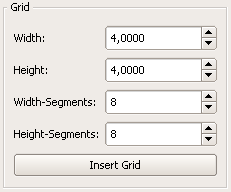
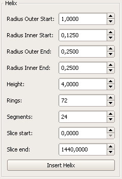

4. Ein Objekt erstellen
Toolbox zur Objekterstellung
Zur Erstellung von Modellen stehen 3 verschiedene Möglichkeiten zur freien Verfügung, welche in ihrer Handhabung viele prinzipielle Ähnlichkeiten aber auch gewisse Unterschiede besitzen.
4.1 Vertex
Toolbox -> Common objects -> Vertex
Vertices (Mehrzahl von Vertex) stellen die elementarste Einheit im 3D-Modeller dar.
Jedes noch so komplexe Szenenobjekt besteht auf elemntarer Ebene nur aus verbundenen Vertices
Einige Vertices welche soeben in der Front-Ansicht eingefügt
worden sind, wobei das letzte Vertex noch selektiert
Grundsätzliches
Vertices können einfach per manuellem Erstellen durch den Benutzer einer Szene hinzugefügt werden. Es gibt keine natürliche Höchstzahl für Vertices in einer Szene, nur ab einer gewissen Zahl hängt es von der Rechenleistung der eingesetzten Hardware ab, wieviele Vertices sich noch vernünftig bearbeiten lassen.
Parameter
Bei der Erstellung eines Vertex werden keine weiteren Parameter benötigt, da nur die Position im Raum nötig ist, um ein Vertex in die Szene einzusetzen.
Anmerkung Das Einfügen von Vertices ist nur in einem 2D-Fenster möglich, da in der perspektivischen Ansicht ein Klick vom Benutzer keinem eindeutigen Punkt in einer
Szenerie entsprechen würde.
Dieselbe Liste von Vertices in der Top-Ansicht betrachtet
4.2 Polygon
Toolbox -> Common objects -> Polygon
Polygone bestehen aus Dreierpaaren von Vertices und sie bilden wiederum die Bauteile für Meshes.
Erstes Vertex des Polygons angelegt

Grundsätzliches
Polygone können vom Benutzer selber erstellt werden. Dazu ist das manuelle Anlegen von 3 Vertices in einer der zweidimensionalen Ansichtsfenster vonnöten. Diese werden dann zu einem Polygon verbunden. Die Indexreihenfolge folgt dabei der Reihenfolge bei der Erstellung.
Parameter
Bei der Erstellung eines Vertex werden keine weiteren Parameter benötigt, da nur die Position im Raum nötig ist, um ein Vertex in die Szene einzusetzen.
Allerdings können alle 2D-Ansichten bei der Konstruktion benutzt werden um auch etwaige Schieflagen eines Polygons zu modellieren.
Anmerkung
Das Einfügen von Polygon ist nur in einem 2D-Fenster möglich, da in der perspektivischen Ansicht ein Klick vom Benutzer keinem eindeutigen Punkt in einer
Szenerie entsprechen würde
Zweites Vertex des Polygons angelegt
Drittes Vertex des Polygons angelegt und damit sogleich die Erstellung abgeschlossen
4.3 Grundkörper
Auswahlleiste aller vorgefertigten Grundkörper
Blacksun liefert bereits eine Vielzahl von vorgefertigten und teilweise sehr fortgeschrittenen Grundkörper-Plugins (=Erweiterungsmodule, siehe Kapitel 11)
Parameterlose Körper
Grundkörper, die keiner weiteren Parameter bedürfen, werden direkt in die Szene eingefügt.
Parameterisierbare Körper
Grundkörper, welche dynamisch vor der Erstellung mit Parametern versorgt werden müssen, klappen nach dem Klick auf das entsprechende Körpericon
ein individuelles Konfigurationsmenü auf.
Die Detaileinstellungen pro parameterisierbaren Grundkörper werden nachfolgend erläutert.
4.3.1 Block
Toolbox -> Common objects ->

Block
Beispiel
Erstellt einen Block. Unter einem Block versteht man einen Würfel mit beliebiger Länge,Breite und Höhe, welcher parallel zu den Ebenen in beliebig viele Teile untergliedert ist.
| Width: |
Die Breite des Block´s |
| Height: |
Die Höhe des Block´s |
| Depth: |
Die Tiefe des Block´s |
| X: |
Anzahl der Unterteilungen parallel der Y/Z-Ebene |
| Y: |
Anzahl der Unterteilungen parallel der X/Z-Ebene |
| Z: |
Anzahl der Unterteilungen parallel der X/Y-Ebene |
4.3.2 Box
Toolbox -> Common objects -> Box
Beispiel
Erstellt eine Box mit den Maßen Breite,Höhe und Tiefe je 1.
4.3.3 Geosphere
Toolbox -> Common objects -> GeoSphere
Beispiel
Erstellt eine komplette GeoSphere. Eine GeoSphere ist eine Sphere, die durch Verfeinerung eines Grundkörpers (Icosaeder = 20-Flächer) entsteht. Jede Verfeinerungsstufe teilt das Face in 4 Subfaces und verschiebt die Eckpunkte. Aufgrund dieser Art der Verfeinerung wirkt die GeoSphere plastischer, natürlicher und regelmäßiger als die 'normale' Sphere, da sie keine 'Pole' aufweist.
| Radius: |
Der Radius der GeoSphere |
| Depth: |
Der Grad (Tiefe) der Verfeinerung. Tiefe 0 entspricht der Grundform (Icosaeder - 20-Flächer) |
4.3.4 Grid
Toolbox -> Common objects -> Grid
Ein Grid ist ein flaches Objekt, dass eine beliebig unterteilte Ebene darstellt. Das entstehende Grid liegt immer zentriert auf der XZ-Ebene.

Einstellungen/Parameter
| Width: |
Die Breite des Gitters (entlang der X-Achse) |
| Height: |
Die Höhe des Gitters (entlang der Z-Achse) |
| Width-Segments: |
Anzahl der Unterteilungen in der Breite |
| Height-Segments: |
Anzahl der Unterteilungen in der Höhe
|
4.3.5 Helix
Toolbox -> Common objects -> Helix
Beispiel
Eine Helix ist eine 3-dimensionale Spirale. Je nach Einstellung können z.B. ebene, zylinder-umwickelnde oder kegel-umwickelnde Spiralen generiert werden. Ebenso lassen sich Körper erstellen werden, die zum Ende hin immer dicker/schlanker werden. Der Detailgrad kann über die Parameter 'Rings' und 'Segments' eingestellt werden. Die Enden der Helix sind immer offen.

Einstellungen/Parameter:
| Radius Outer Start: |
Der äußere Radius (Wicklungsradius) am Anfang der Helix |
|
Radius Inner Start: |
Der innere Radius (Ringradius) am Anfang der Helix |
| Radius Outer End: |
Der äußere Radius (Wicklungsradius) am Ende der Helix |
|
Radius Inner End: |
Der innere Radius (Ringradius) am Ende der Helix |
|
Height: |
Die Höhe der Helix |
|
Rings: |
Anzahl der Ringe |
|
Segments: |
Anzahl der Segmente/Ecken pro Ring |
|
Slice start: |
Startwinkel in Grad |
|
Slice end: |
Endwinkel in Grad |
Tipps und Informationen:
- Um mehrere Windungen zu erhalten, muss der Endwinkel entsprechend gesetzt werden. So wählt man beispielsweise für 5 Wicklungen und einem Startwinkel von 45.0° einen Endwinkel von 5*360.0°+45°=1845.0°.
- Der Parameter 'Rings' gibt die Gesamtanzahl der Ringe aller Wicklungen der Helix an und ist nur indirekt eine Angabe für 'Ringe pro Wicklung'.
- Ist der Startwinkel größer als der Endwinkel, so entsteht eine Helix, deren Face-Vorderseite innen liegen (nach innen gestülpte Helix)
4.3.6 nBox
Toolbox -> Common objects -> nBox
Beispiel
Erstellt eine Box bei welcher die Anzahl der Ecken angegeben wird. Durch das verwenden von hohen Werten für die Ecken, erreicht man die Erstellung eines Zylinders. Um den "Rundheitseffekt" durch das Licht zu verstärken dient der Parameter "Shared Vertices". Weiter Parameter sind: Parts für die Anzahl der Unterteilungen parallel der X-Achse, Radius für den Radius und Height für die Höhe der Box. Mit Centered kann man festlegen ob der "Deckel" und "Boden" der Box von deren Mitte oder einem Eckpunkt aus berechnet werden soll.
| Corners: |
Anzahl der Ecken |
| Parts: |
Anzahl der Unterteilungen parallel der X/Z-Ebene |
| Radius: |
Der Radius zu den Ecken |
| Height: |
Die Höhe der Box |
| Shared Vertices: |
Lässt bei der Lichtberechnung die Box "runder" erscheinen |
| Centered: |
Bestimmt ob der "Deckel/Boden" von deren Mittelpunkt oder einem Eckpunkt aus berechnet wird. |
4.3.7 Pyramid
Toolbox -> Common objects -> Pyramid
Beispiel
Erstellt eine Pyramide bei welcher die Anzahl der Ecken angegeben wird. Durch das verwenden von hohen Werten für die Ecken, erreicht man die Erstellung eines Kegels. Um den "Rundheitseffekt" durch das Licht zu verstärken dient der Parameter "Shared Vertices". Weiter Parameter sind: Radius für den Radius und Height für die Höhe der Pyramide. Mit Centered kann man festlegen ob der "Boden" der Pyramide von der Mitte oder einem Eckpunkt aus berechnet werden soll.
| Corners: |
Anzahl der Ecken |
| Radius: |
Der Radius zu den Ecken |
| Height: |
Die Höhe der Pyramide |
| Shared Vertices: |
Lässt bei der Lichtberechnung die Pyramide "runder" erscheinen |
| Centered: |
Bestimmt ob der "Boden" vom Mittelpunkt oder einem Eckpunkt aus berechnet wird. |
4.3.8 Goblet
Toolbox -> Common objects -> [ICON]Goblet
Beispiel
Erstellt einen Kelch.
4.3.9 Sphere
Toolbox -> Common objects -> Sphere
Erstellt eine komplette Kugel. Der Detailgrad kann über die Parameter 'Rings' und 'Segments' eingestellt werden.
| Radius: |
Der Radius der Kugel |
| Rings: |
Anzahl der Ringe (Unterteilung in der Höhe) |
| Segments: |
Anzahl der Segmente pro Ring (Radiale Unterteilung) |
4.3.10 Tube
Toolbox -> Common objects -> Tube
Beispiel
Erstellt eine Röhre, bei der die Anzahl der Ecken angegeben wird. Je höher die Anzahl der Ecken angegeben wird, desto "runder" wird die Röhre. Um diesen Effekt durch das Licht noch zu verstärken, dient der Parameter "Shared Vertices". Des weiteren wird mit "Outer Radius" der Radius der Röhre und mit "Inner Radius" der des Loches angegeben. Weitere Paramteter sind: "Height" für die Höhe der Rühre und "Parts" für die Anzahl der Unterteilungen parallel der X/Z-Ebene.
| Outer Radius: |
Der Radius der Röhre |
| Inner Radius: |
Der Radius des Loches des Röhre |
| Height: |
Die Höhe der Röhre |
| Corners: |
Anzahl der Ecken der Röhre |
| Parts: |
Anzahl der Unterteilungen parallel der X/Z-Ebene |
| Shared Vertices: |
Lässt bei der Lichtberechnung die Röhre "runder" erscheinen |
4.3.11 Torus
Toolbox -> Common objects -> Torus
Beispiel
Erstellt eine komplette bzw. einen Teil eines Torus. Sollte nur ein Teil des Torus generiert werden, so hat dieser offene Enden. Der Detailgrad kann über die Parameter 'Rings' und 'Segments' eingestellt werden.
| Radius Outer: |
Der äußere Radius (Gesamtradius) |
| Radius Inner: |
Der innere Radius (Ringradius) |
| Rings: |
Anzahl der Ringe |
| Segments: |
Anzahl der Segmente/Ecken pro Ring |
| Slice start: |
Startwinkel in Grad |
|
Slice end: |
Endwinkel in Grad |
Tipps und Informationen:
- Werden mehrer Parameter benötigt (z.b. Wicklungsanzahl, Höhe, ...), so sollte zur Generierung die Helix herangezogen werden
- Der Parameter 'Rings' gibt die Gesamtanzahl der Ringe des gesamten Torus an (ein halber und ein voller Torus haben damit die gleiche Anzahl der Ringe)
- Ist der Startwinkel größer als der Endwinkel, so entsteht ein Torus, deren Face-Vorderseite innen liegen (nach innen gestülpter Torus)